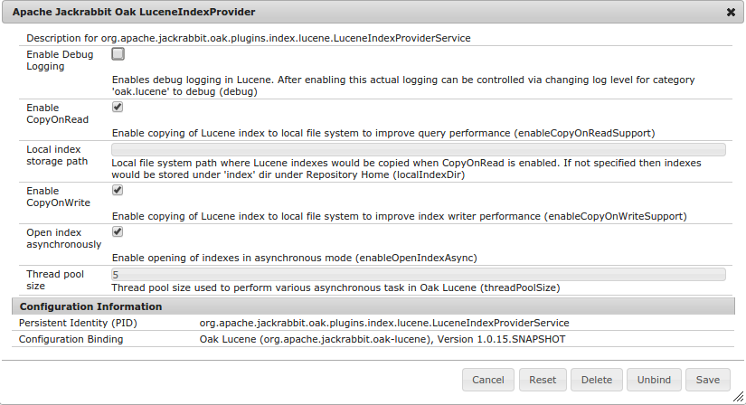

Following details are applicable for Oak release 1.0.8 and earlier. For current documentation refer to Current Lucene documentation
Oak supports Lucene based indexes to support both property constraint and full text constraints
The full-text index handles the ‘contains’ type of queries:
//*[jcr:contains(., 'text')]
If a full-text index is configured, then all queries that have a full-text condition use the full-text index, no matter if there are other conditions that are indexed, and no matter if there is a path restriction.
If no full-text index is configured, then queries with full-text conditions may not work as expected. (The query engine has a basic verification in place for full-text conditions, but it does not support all features that Lucene does, and it traverses all nodes if there are no indexed constraints).
The full-text index update is asynchronous via a background thread, see Oak#withAsyncIndexing. This means that some full-text searches will not work for a small window of time: the background thread runs every 5 seconds, plus the time is takes to run the diff and to run the text-extraction process.
The async update status is now reflected on the oak:index node with the help of a few properties, see OAK-980
TODO Node aggregation OAK-828
The index definition node for a lucene-based full-text index:
Optionally you can add
Example:
{
NodeBuilder index = root.child("oak:index");
index.child("lucene")
.setProperty("jcr:primaryType", "oak:QueryIndexDefinition", Type.NAME)
.setProperty("type", "lucene")
.setProperty("async", "async")
.setProperty(PropertyStates.createProperty("includePropertyTypes", ImmutableSet.of(
PropertyType.TYPENAME_STRING, PropertyType.TYPENAME_BINARY), Type.STRINGS))
.setProperty(PropertyStates.createProperty("excludePropertyNames", ImmutableSet.of(
"jcr:createdBy", "jcr:lastModifiedBy"), Type.STRINGS))
.setProperty("reindex", true);
}
Note The Oak Lucene index will only index Strings and Binaries by default. If you need to add another data type, you need to add it to the
includePropertyTypes setting, and don’t forget to set the reindex flag to true.
Oak uses Lucene for creating index to support queries which involve property constraint that is not full-text
select * from [nt:base] where [alias] = '/admin'
To define a property index on a subtree for above query you have to add an index definition
"uuid" : {
"jcr:primaryType": "oak:QueryIndexDefinition",
"type": "lucene",
"async": "async",
"fulltextEnabled": false,
"includePropertyNames": ["alias"]
}
The index definition node for a lucene-based full-text index:
Note that compared to Property Index Lucene Property Index is always configured in Async mode hence it might lag behind in reflecting the current repository state while performing the query
Taking another example.
select
*
from
[app:Asset] as a
where
[jcr:content/jcr:lastModified] > cast('2014-10-01T00:00:00.000+02:00' as date)
and [jcr:content/metadata/format] = 'image'
order by
jcr:content/jcr:lastModified
To enable faster execution for above query you can create following Lucene property index
"assetIndex":
{
"jcr:primaryType":"oak:QueryIndexDefinition",
"declaringNodeTypes":"app:Asset",
"includePropertyNames":["jcr:content/jcr:lastModified" ,
"jcr:content/metadata/format"],
"type":"lucene",
"async":"async",
"reindex":true,
"fulltextEnabled":false,
"orderedProps":["jcr:content/jcr:lastModified"]
"properties": {
"jcr:primaryType":"oak:Unstructured",
"jcr:content": {
"jcr:primaryType":"oak:Unstructured",
"jcr:lastModified": {
"jcr:primaryType":"oak:Unstructured",
"type":"Date"
}
}
}
}
Above index definition makes use of various features supported by property index
For implementation details refer to OAK-2005. Following sections would provide more details about supported features
Lucene index definition is managed via NodeStore and supports following attributes
In some cases property specific configurations are required. For example typically while performing order by in query user does not specify the property type. In such cases you need to specify the property type explicitly.
Property definition nodes are created as per there property name under properties node of index definition node. For relative properties you would need to create the required path structure under properties node. For e.g. for property jcr:content/metadata/format you need to create property node at path <index definition node>/properties/jcr:content/jcr:lastModified
"properties":
{
"jcr:primaryType":"oak:Unstructured",
"jcr:content":
{
"jcr:primaryType":"oak:Unstructured",
"jcr:lastModified":
{
"jcr:primaryType":"oak:Unstructured",
"type":"Date"
}
}
}
Lucene property index provides efficient sorting support based on Lucene DocValue fields. To configure specify the list of property names which can be used in the order by clause as part of orderedProps property.
If the property is of type other than string then you must specify the property definition with type details
Refer to Lucene based Sorting for more details.
Some of the runtime aspects of the Oak Lucene support can be configured via OSGi configuration. The configuration needs to be done for PID org.apache .jackrabbit.oak.plugins.index.lucene.LuceneIndexProviderService

Lucene index definition can be defined at any location in repository and need not always be defined at root. For example if your query involves path restrictions like
select * from [app:Asset] as a where ISDESCENDANTNODE(a, '/content/companya') and [format] = 'image'
Then you can create the required index definition say assetIndex at /content/companya/oak:index/assetIndex. In such a case that index would contain data for the subtree under /content/companya
Oak query engine supports native queries like
//*[rep:native('lucene', 'name:(Hello OR World)')]
If multiple Lucene based indexes are enabled on the system and you need to make use of specific Lucene index like /oak:index/assetIndex then you can specify the index name via functionName attribute on index definition.
For example for assetIndex definition like
{
"jcr:primaryType":"oak:QueryIndexDefinition",
"type":"lucene",
...
"functionName" : "lucene-assetIndex",
}
Executing following query would ensure that Lucene index from assetIndex should be used
//*[rep:native('lucene-assetIndex', 'name:(Hello OR World)')]
By default Lucene indexes are stored in the NodeStore. If required they can be stored on the file system directly
{
"jcr:primaryType":"oak:QueryIndexDefinition",
"type":"lucene",
...
"persistence" : "file",
"path" : "/path/to/store/index"
}
To store the Lucene index in the file system, in the Lucene index definition node, set the property persistence to file, and set the property path to the directory where the index should be stored. Then start reindexing by setting reindex to true.
Note that this setup would only for those non cluster NodeStore. If the backend NodeStore supports clustering then index data would not be accessible on other cluster nodes
Lucene indexes are stored in NodeStore. Oak Lucene provides a custom directory implementation which enables Lucene to load index from NodeStore. This might cause performance degradation if the NodeStore storage is remote. For such case Oak Lucene provide a CopyOnReadDirectory which copies the index content to a local directory and enables Lucene to make use of local directory based indexes while performing queries.
At runtime various details related to copy on read features are exposed via CopyOnReadStats MBean. Indexes at JCR path e.g. /oak:index/assetIndex would be copied to <index dir>/<hash of jcr path>. To determine mapping between local index directory and JCR path refer to the MBean details

For more details refer to OAK-1724. This feature can be enabled via Lucene Index provider service configuration
Oak Lucene registers a JMX bean LuceneIndex which provide details about the index content e.g. size of index, number of documents present in index etc

Luke is a handy development and diagnostic tool, which accesses already existing Lucene indexes and allows you to display index details. In Oak Lucene index files are stored in NodeStore and hence not directly accessible. To enable analyzing the index files via Luke follow below mentioned steps
Download the Luke version which includes the matching Lucene jars used by Oak. As of Oak 1.0.8 release the Lucene version used is 4.7.1. So download the jar from here
$wget https://github.com/DmitryKey/luke/releases/download/4.7.0/luke-with-deps.jar
Use the Oak Console to dump the Lucene index from NodeStore to filesystem directory. Use the lc dump command
$ java -jar oak-run-*.jar console /path/to/oak/repository Apache Jackrabbit Oak 1.1-SNAPSHOT Jackrabbit Oak Shell (Apache Jackrabbit Oak 1.1-SNAPSHOT, JVM: 1.7.0_55) Type ':help' or ':h' for help. ------------------------------------------------------------------------- /> lc info /oak:index/lucene Index size : 74.1 MB Number of documents : 235708 Number of deleted documents : 231 /> lc dump info /> lc dump /path/to/dump/index/lucene /oak:index/lucene Copying Lucene indexes to [/path/to/dump/index/lucene] Copied 74.1 MB in 1.209 s /> lc dump /path/to/dump/index/slingAlias /oak:index/slingAlias Copying Lucene indexes to [/path/to/dump/index/lucene-index/slingAlias] Copied 8.5 MB in 218.7 ms />
Post dump open the index via Luke. Oak Lucene uses a custom Codec. So oak-lucene jar needs to be included in Luke classpath for it to display the index details
$ java -XX:MaxPermSize=512m luke-with-deps.jar:oak-lucene-1.0.8.jar org.getoptuke.Luke
From the Luke UI shown you can access various details.
Following are some best practices to get good performance from Lucene based indexes
Make use on non root indexes. If you query always perform search under certain paths then create index definition under those paths only. This might be helpful in multi tenant deployment where each tenant data is stored under specific repository path and all queries are made under those path.
Index only required data. Depending on your requirement you can create multiple Lucene indexes. For example if in majority of cases you are querying on various properties specified under <node>/jcr:content/metadata where node belong to certain specific nodeType then create single index definition listing all such properties and restrict it that nodeType. You can the size of index via mbean